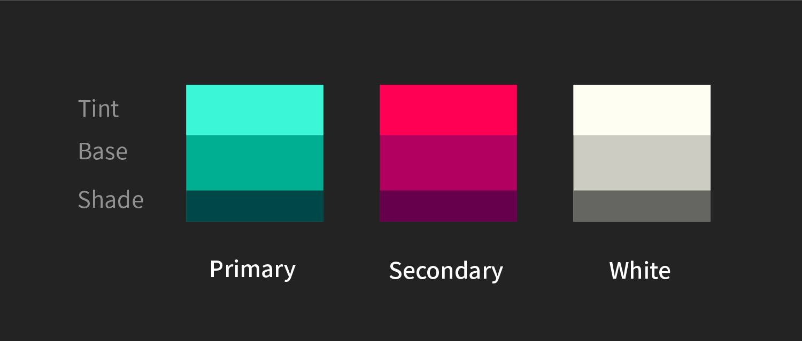
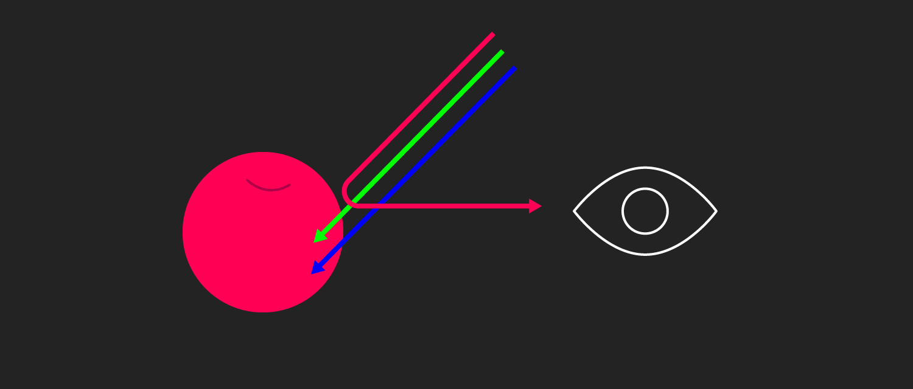
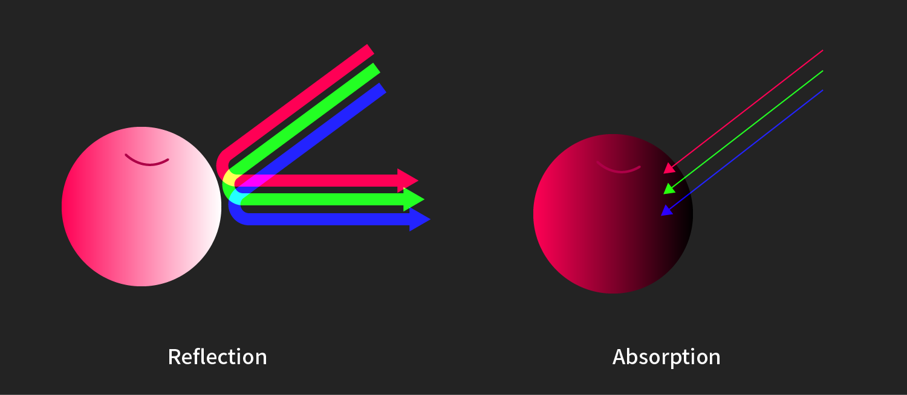
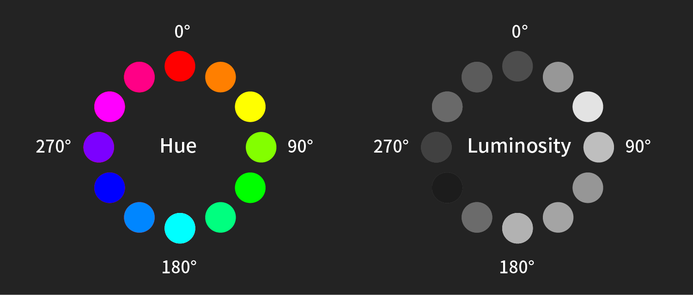
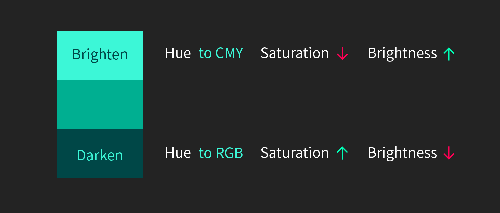

색
사과가 엄청난 속도로 눈 앞을 지나가면 머릿속에는 빨간 뭔가가 지나갔다고 느낄 것입니다. 이렇듯 눈은 색을 가장 먼저 인지합니다. 그만큼 중요합니다. 색을 잘못 다루면 사용자의 머릿속에 얼룩덜룩한 인상이 남을 수도 있습니다. 보통 서비스에서 사용할 색으로 아래 네가지를 고릅니다. 이 종류만으로 디자인할 수도 있지만 페이지에서 요구되는 것들이 많아질 때 디자인이 어려워집니다. 색을 어떻게 다뤄야할까요?

색 정하기
- Primary: 브랜드 컬러
- Secondary: 브랜드 컬러만으로 해결이 안될 때를 위한 색상
(Primary와 확실하게 구분이 되어야함) - B&W: 주로 배경과 글에 쓰이며, 브랜드 내의 가장 밝은 색과 가장 어두운 색
사진에서 색 고르기

색의 요소
색을 바꿔보기 전에 스크린에서 색이 어떻게 쓰이는지 궁금하네요. 그냥 "발광 초록"이라고 한다고 표시되는게 아니니까요. 가장 직관적으로 구분할 수 있는 것은 HSB 입니다. Hue(색조), Saturation(채도), Brightness(밝기)로 우리가 실제로 경험하는 색의 변화를 다루기에 가장 편한 개념입니다. 실제 코드에서는 편의를 위해 Hex와 RGBA로 작업하겠지만, 컬러 팔레트를 정할 때는 HSB로 하는게 편할 것 같네요.

한가지 색 다양하게 쓰기
여러 색을 사용하고 싶은데 그렇다고 무지개 색을 쓸 수는 없을 것 같습니다. 변화가 너무 많은건 눈이 피곤하니까 가능한 적게 변했으면 좋겠네요. 눈에 가장 부담이 안가는 밝기를 조절해봐야겠습니다. 그래픽 툴에서 HSB 중 B를 조절해봅니다.

명도 차이만으로도 쓸 수 있는 색이 늘어났네요! 바로 디자인에 적용해도 큰 문제는 없지만 더 자연스럽고 풍부한 느낌을 주고 싶네요. Brightness 는 조절했으니까 Hue 와 Satuation을 조절해야할 것 같네요. 완전히 다른 색상으로 느껴지지 않는 범위 안에서 두 수치를 조절해봤습니다.

더 풍부한 느낌이 듭니다! Brightness는 어떻게 바꿔야 하는지 직관적으로 알겠는데 Hue와 Saturation은 색이 밝기에 어떤 영향을 끼칠까요?
자연에서의 색 변화
스크린이 아닌 자연에서는 빛이 강해지면 색이 사라집니다.(사과 바로 앞에 손전등을 댔을 때를 상상해보세요.) 색은 물질에 빛이 반사되서 보이는데 눈이 구분할 수 있는 범위를 넘어 반사량이 너무 많으면 하얗게, 반사량이 너무 적으면 어둡게 보입니다. 엄청 어려워 보이는데 결론은 밝아지면 [채도 Down, 명도 Up] 어두워지면 [채도 Up, 명도 Down]인 것입니다.


색상 자체의 밝기
채도와 명도가 밝기에 어떻게 영향을 끼치는지는 알겠는데 색상 자체의 밝기를 알기가 쉽지 않습니다. 노란색은 밝아서 흰색 바탕에 쓰기 힘들고 파랑색은 어두워 검은 배경에 쓰기 어려운 것 정도는 알겠는데 다른 색들은 어떻게 해야할지 잘 모르겠네요. 스크린에서 보이는 색상 자체의 밝기는 어떻게 알 수 있을까요?

일러스트레이터로 HSB 중 Hue를 조정하여 12가지 색을 지정했습니다. 그대로 복사한 다음 흑백으로 전환했습니다. 노란색과 파란색을 예측이 됐는데 나머지 색깔들은 그다지 규칙적으로 보이지 않습니다. 180도와 300도에 있는 색은 왜 밝아진걸까요?

각 수치별로 그래프를 비교했을 때 Red Green Blue로 갈수록 어두어지고 Cyan Magenta Yellow 로 갈수록 밝아집니다. 매우 익숙한 느낌이 드네요. RGB와 CMY가 기준입니다. 스크린은 빛의 삼원색을 사용하기 때문에 색이 많이 섞일수록 흰색에 가까워지므로 원색이 가장 많이 섞인 CMY가 밝아보이는 것입니다.
스크린에서의 색변화
기존 색조에서 벗어나지 않으면서 다양한 변화를 주기 위한 몇가지 규칙을 알게되었습니다.

- 색을 밝게: CMY 계열 색상으로 움직이고 채도를 줄이고 밝기를 늘린다.
- 색을 어둡게: RGB 계열 색상으로 움직이고 채도를 늘리고 밝기가 줄인다.
- 500px 영역과 50px 에서의 자극량은 매우 다릅니다.이것은 어떻게 알 수 있을까요?
- 어떤 색 옆에 인접해 있느냐에 따라 색이 주는 느낌이 매우 다릅니다. 이 차이는 어떻게 알 수 있을까요?
- AR과 VR 에서는 공간감이 주된 변화일 것입니다. 공기 원근과 같은 공간과 색온도에 의한 색 변화는 어떻게 일어날까요? 이런 요소는 인터페이스에 어떤 영향을 끼칠까요?
- 브랜딩 영역에서 색은 어떻게 해석되고 있을까요? 사람들은 색을 어떤 의미로 받아들일까요?